PROJETO DE TCC · EXPORTAÇÃO CIENTÍFICA · 24/10/2026Geometrias do halo contínuo
Comparação até 200 Myr
Esférico, oblato, prolato e triaxial. Energia, cinemática, estrutura e campo gravitacional medidos em ensaios controlados.
Origem dos resultados
Os dados são de uma campanha existente, concluída em 2026-10-23T02:47:06.616Z, recortada até o snapshot nominal de 200 Myr. Não foi executada nova integração e não são dados da aba atualmente aberta. As quatro formas usam os mesmos hashes iniciais de posições, velocidades e massas bariônicas. São 511 partículas de bojo e 1.537 de disco; o halo é um campo material NFW contínuo e estático. Semente 2026; suavização entre partículas de 0,1 kpc; força e trajetória WebGPU Float32; energia avaliada diretamente em CPU Float64. Foram preservados 11 estados por passo e geometria: 0, 20, ..., 200 Myr nominais. O último tempo efetivo é 200.00000298023224 Myr devido ao dt Float32. Os tempos nunca foram arredondados nos CSV/JSON.
Estado final e máximos amostrados · dt = 0,1 Myr
Valores iniciais, finais e controle dt = 0,05 Myr estão em resumo-200Myr.csv. Energia total em unidades internas; cada geometria tem sua própria referência inicial.
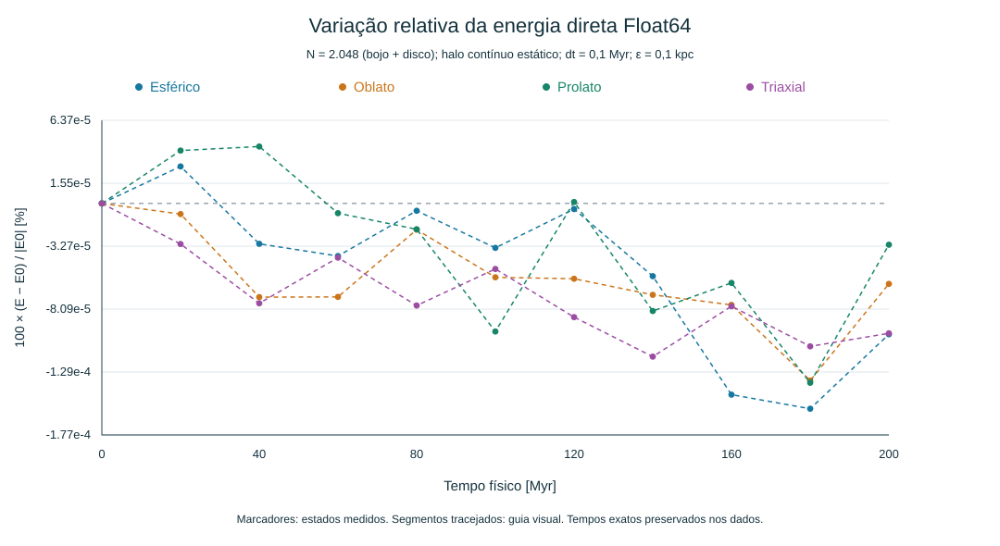
Variação relativa da energia direta Float64. Salvar SVG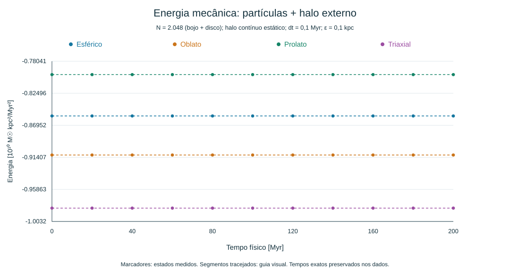
Energia mecânica: partículas + halo externo. Salvar SVG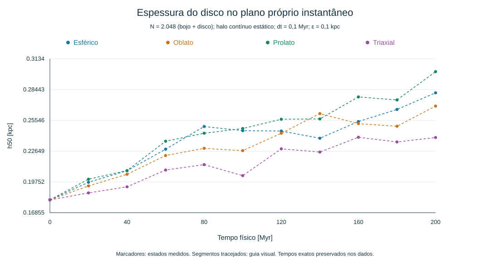
Espessura do disco no plano próprio instantâneo. Salvar SVG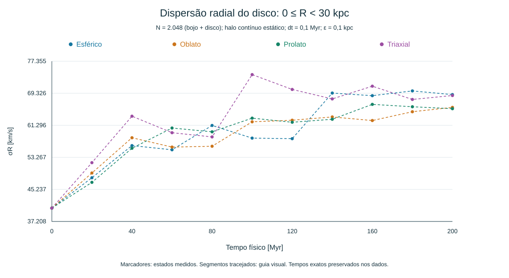
Dispersão radial do disco: 0 ≤ R < 30 kpc. Salvar SVG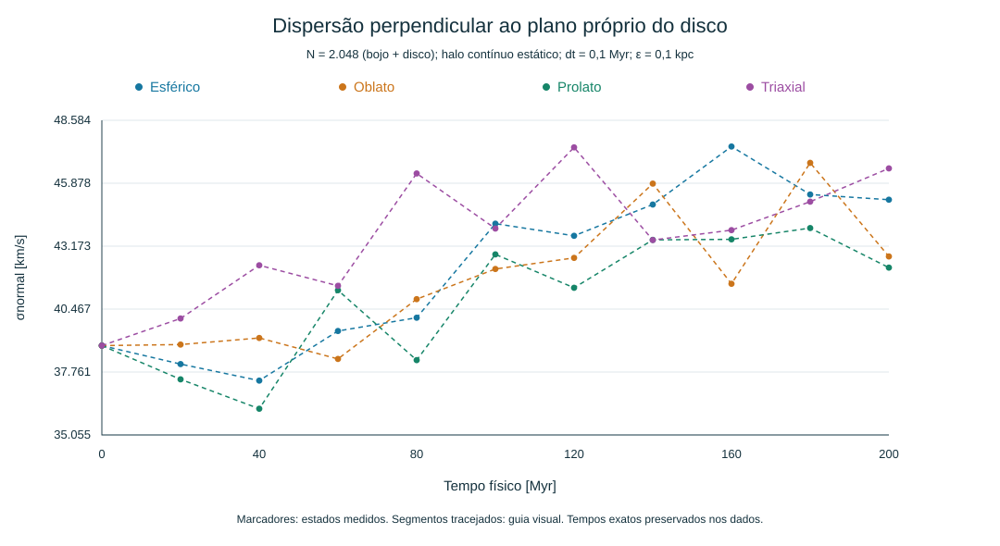
Dispersão perpendicular ao plano próprio do disco. Salvar SVG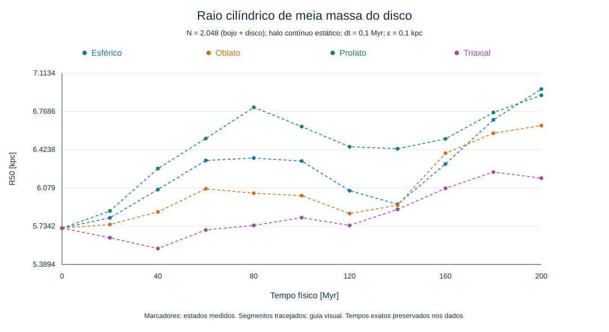
Raio cilíndrico de meia massa do disco. Salvar SVG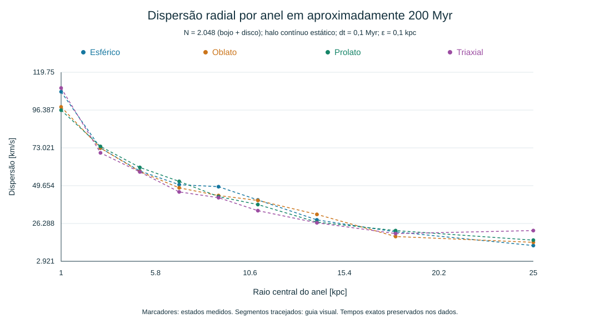
Dispersão radial por anel em aproximadamente 200 Myr. Salvar SVG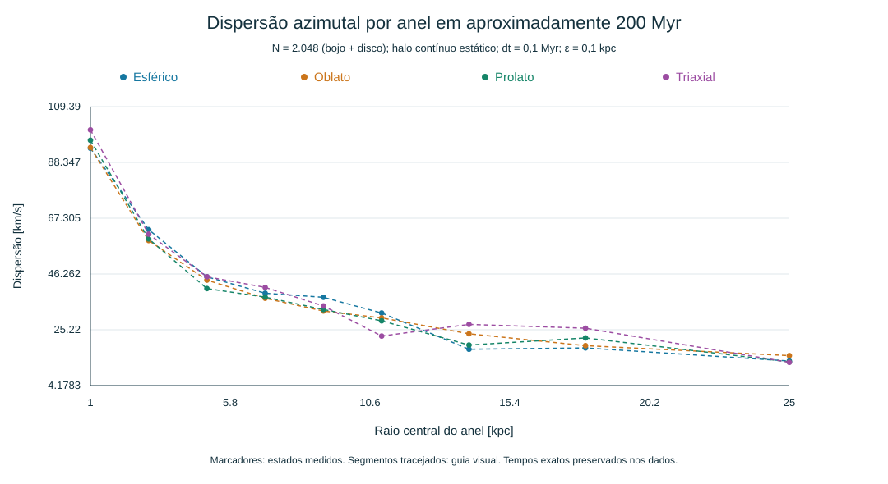
Dispersão azimutal por anel em aproximadamente 200 Myr. Salvar SVG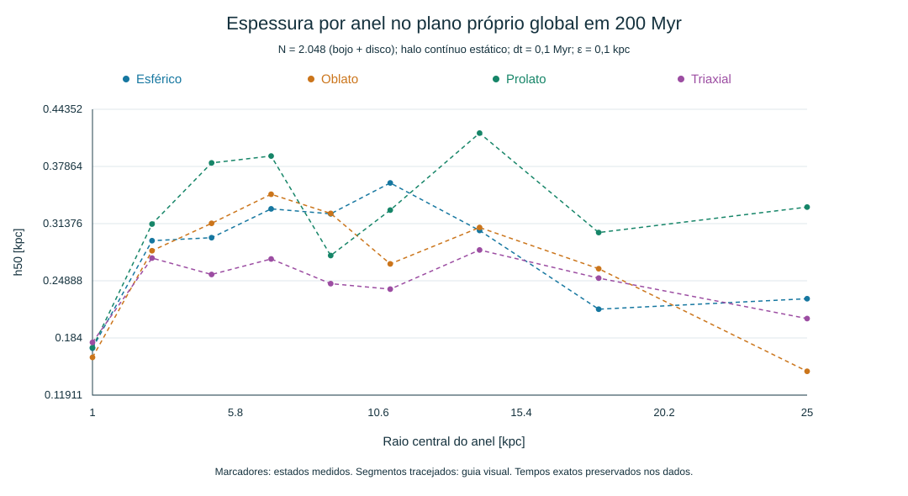
Espessura por anel no plano próprio global em 200 Myr. Salvar SVG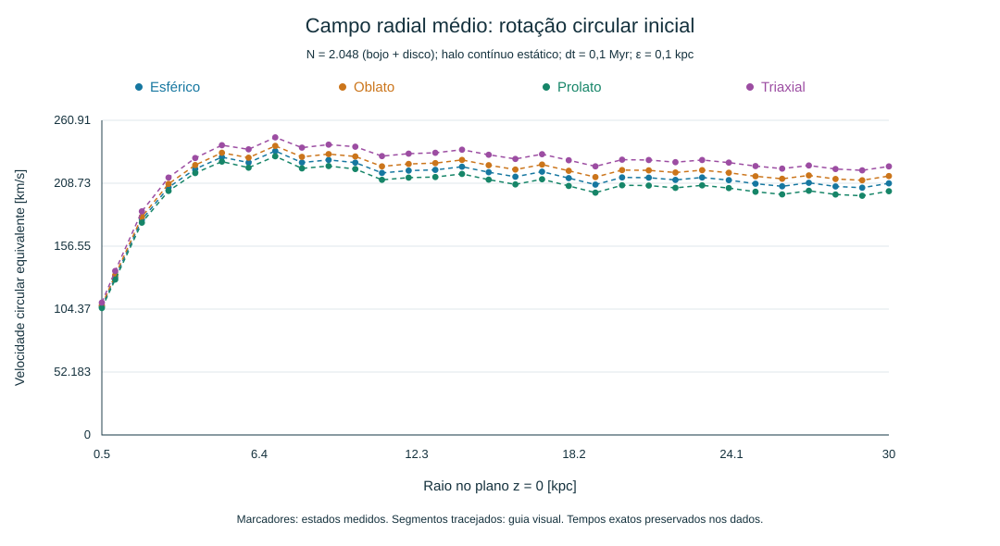
Campo radial médio: rotação circular inicial. Salvar SVG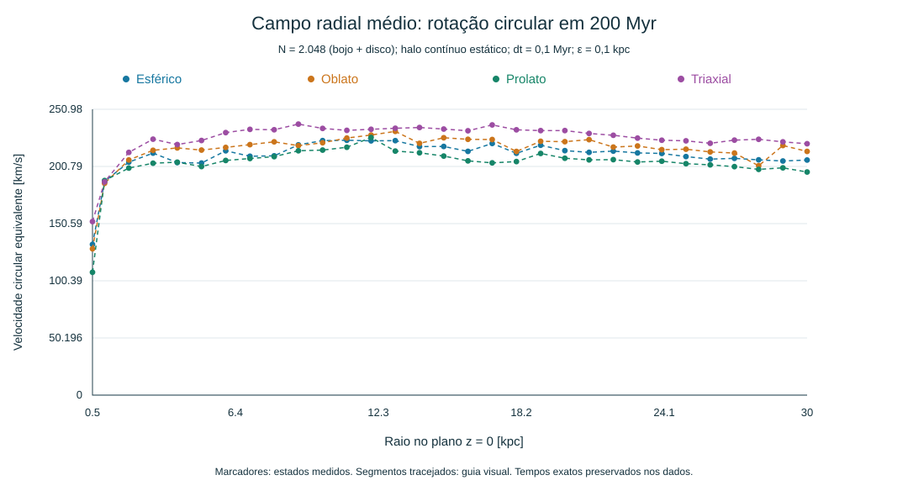
Campo radial médio: rotação circular em 200 Myr. Salvar SVGDados e definições
Evolução CSV · Dispersões e espessura por anel CSV · Curvas de rotação CSV · Diagnósticos completos JSON
Energia: E = K + U_pares + Σ mᵢ Φ_halo(rᵢ), com pares Plummer contados uma vez e potencial externo sem fator 1/2. K foi obtida algebricamente de E − U_pares − U_halo já registrados. Unidades de energia: 10¹⁰ M☉ kpc²/Myr². h50: mediana ponderada da distância absoluta ao plano próprio robusto; a medida em relação ao plano inicial também está no CSV. σnormal: dispersão da velocidade perpendicular ao plano próprio, ponderada por massa, usando todo o disco. σR e σphi: dispersões centrais por anel no plano próprio global. A σR agregada usa apenas 0 ≤ R < 30 kpc e combina massas, médias e variâncias dos anéis: σ² = Σ M_b[σ_b² + (μ_b − μ)²]/Σ M_b. Essa agregação é derivada de medidas existentes, não uma nova integração. As seleções radiais variam com o tempo; não são coortes fixas. Conversão: 1 km/s = 0.0010227121650537077 kpc/Myr. R50 refere-se ao raio cilíndrico em torno da origem e do eixo z iniciais, conforme structureDiagnostics. Curvas de rotação: sqrt(−R média(aR)) no plano z=0, em sondas azimutais; no triaxial são velocidades circulares equivalentes do campo médio, não prova de órbitas circulares exatas. Valores ausentes permanecem vazios.
Escopo e limitações
O JSON contém diagnósticos, parâmetros efetivos completos e hashes iniciais. Não contém as posições e velocidades finais de todas as partículas; portanto não é um checkpoint para retomar a integração. As geometrias são elipsoides de isodensidade: m²=x'²+y'²/p²+z'²/q². Na convenção do programa, p=1 e q>1 é o modo prolato, com eixo z alongado. A orientação dos ensaios é nula. O CSV de evolução contém Lx, Ly, Lz e massa bariônica; os CSV por anel contêm σR, σphi, σnormal e h50. A massa do halo e seus parâmetros estão no haloField do JSON; a coluna de massa da evolução mede apenas partículas bariônicas. Os custos computeMs/diagnosticMs/wallMs do bloco coarse pertencem à campanha original até 1.200 Myr e NÃO podem ser atribuídos ao recorte de 200 Myr. O bloco fine foi originalmente integrado até 200 Myr e seus custos pertencem a esse ensaio. Nenhum tempo de cálculo novo foi medido.
Uma semente e uma resolução pequena não demonstram convergência em N nem estabilidade de longo prazo. As velocidades bariônicas vêm da realização de referência esférica, sem reequilíbrio específico para cada forma. Os valores p=1,q=0,8; p=1,q=1,25; e p=0,85,q=0,7 são hipóteses de teste, não medidas observacionais. Todas as quatro realizações engrossaram até 200 Myr. As energias iniciais diferem porque a fonte externa é diferente; cada curva utiliza seu próprio E0. Boa conservação energética não certifica equilíbrio estrutural. No triaxial, torques do campo externo podem mudar Lz fisicamente; o vetor de momento angular das partículas não é um invariante genérico desse campo. Os máximos são apenas os máximos dos estados amostrados.
Rastreabilidade
Origem: reports/halo-shapes-2026-10-23/campaign-results.json. Identidade histórica, script e registros de validação preservados em origem/. Os testes históricos não foram executados novamente e não constituem certificação física.
SHA256 do JSON original: 3c186a4679ed21eb0deab04138b3589c5a7df2ca75c6a2f7432f7f6b0b56c401
Verificações desta exportação: quatro geometrias, dois passos, 11 estados em cada série, condições iniciais idênticas, normalização energética independente e nenhum estado interpolado.